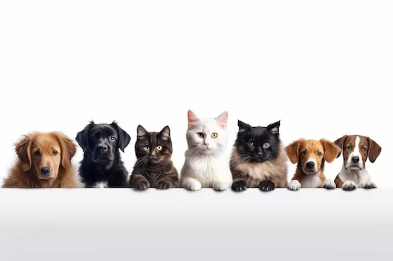

Angeles del Cielo

The name Angeles del Cielo Oaxaca represents an animal rescue organization dedicated to rescuing, sterilize and finding loving homes for abandoned animals in Oaxaca.
Angeles del Cielo is a space created to help dogs and cats who need a second chance. Our goal is to promote responsible adoption and provide information so that more animals can find a safe and loving home. Here you can meet some of our animals available for adoption, read their stories, and learn how you can help. Every adoption represents a new opportunity for an animal that deserves to be loved. Together we can change a life, one paw print at a time. 🐾❤️
How can you help?
You can help by adopting, sharing information about our animals, or supporting our activities. Meet our animals, discover their stories, and find your next companion.